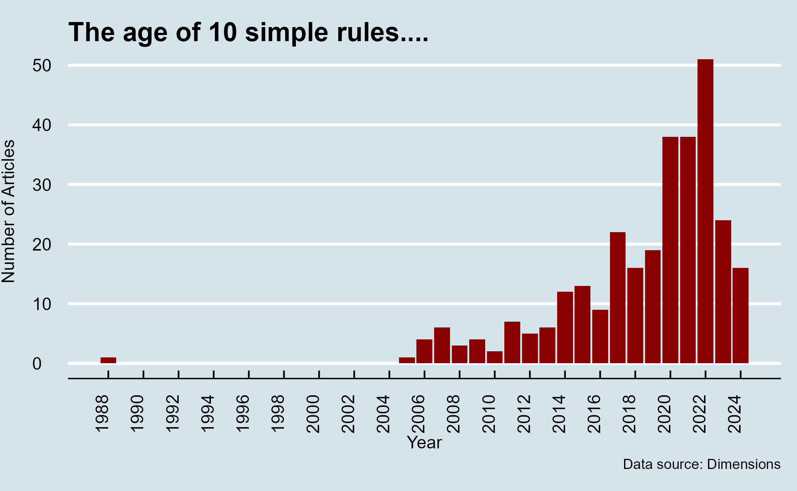
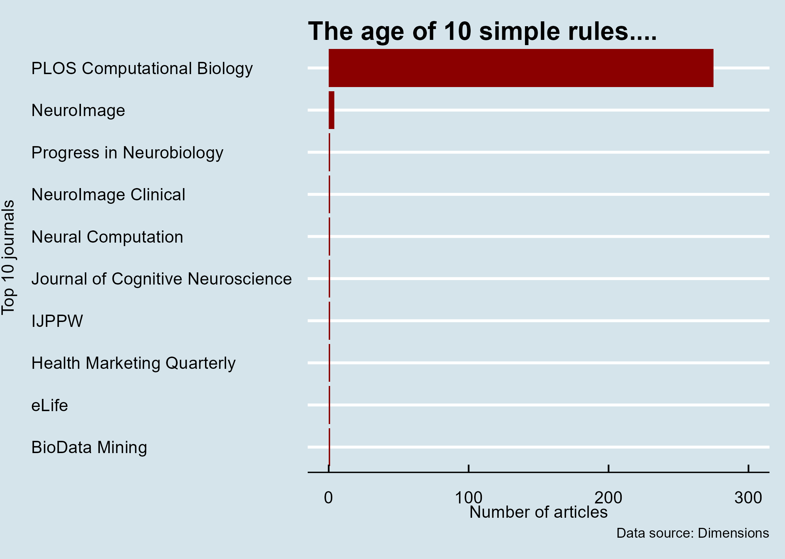

library(tidyverse)
keywords<-c("ten simple rules","10 simple rules")
clean_data<- read_csv("Dimensions-Publication-2024-08-24_19-59-19.csv", skip = 1)%>%
filter(grepl(paste(keywords,collapse = "|"),tolower(Title)))
head(clean_data,10)The golden era of Ten simple rules articles
R
PLOS
Data analysis
Pablo Gómez Barreiro ![]()
Top 10 lists have dominated the internet for ages, and academic publishing is no exception. My Twitter feed is proof of this; almost daily, I see someone retweeting a paper titled "Ten Simple Rules to…" This made me curious about the origin of these papers and whether they were a sudden trend or just a passing phase. What I initially thought would be a straightforward answer turned into an unexpectedly enjoyable internet adventure.
The data, and the cleaning
Using Dimensions, I downloaded all available data for articles containing the phrases “10 simple rules” and “Ten simple rules.” It’s not a perfect starting point, but I’ll clean the data later. If you’d like to follow along or explore on your own, you can find the original .csv file here: LINK. Just remember to skip the first row when loading the file in R. After that, it’s simply a matter of filtering out titles that don’t contain our target keywords
The original sin
Finding when all this trend started is easy:
library(tidyverse)
clean_data%>%
select(Title,PubYear)%>%
arrange(PubYear)%>%
head(5)This means that the first known paper (according to Dimensions) with “Ten simple rules” in its title was published back in 1988, the same year Disney released Who Framed Roger Rabbit? In other words, Christopher Lloyd and M.C. Budden et al. were in a pioneering phase simultaneously. The paper, titled Ten Simple Rules for Improving Advertising Programs in the Health Care Industry, was the first of its kind. I’d love to provide more details about these rules, but in 1988, academia hadn’t yet discovered the wonders of open access, and modern publishers still believe in gatekeeping the contents of a 36-year-old article.
The second paper with a similar title had to wait a whopping 17 years before making its appearance in 2005. Philip E. Bourne, the Editor-in-Chief of PLOS Computational Biology, was the mastermind behind the fitting title Ten Simple Rules for Getting Published, which surely can be credited with truly starting the “10 simple rules” trend, setting off a snowball effect in academic publishing.
The golden era
“Ten simple rules” is such a simple and effective formula for a title—a blend of clickbait with the enticing promise to solve the reader’s problems in just a few easy steps. Not nine rules, and certainly not eleven. But just how many of these papers are out there in the wild? The answer is:
library(ggthemes)
clean_data%>%
summarise(.by=PubYear,n=n())%>%
ggplot(aes(x=PubYear,y=n))+
geom_col(fill="darkred")+
scale_x_continuous(breaks = seq(1988,2024,2))+
labs(title = "The age of 10 simple rules....", y="Number of Articles",x="Year",caption = "Data source: Dimensions")+
theme_economist()+
theme(axis.text.y = element_text(hjust = 0),
axis.title.y = element_text(vjust = 5),
axis.text.x = element_text(angle=90))
a lot! About 500 of “10 simple rules” papers. That means somewhere in the literature there are at least 5000 simple rules!
math=500*10
print(math)[1] 5000My next question was, “Where are all these articles being published?” When I saw the answer, my first thought was that I must have made an embarrassing mistake during data cleaning or miswritten something in the code. But nope, the data was correct—papers titled “Ten Simple Rules” have a clear and distinct origin.
clean_data%>%
summarise(.by=`Source title`,n=n())%>%
arrange(desc(n))%>%
mutate(`Source title`=ifelse(grepl("International Journal for Paras",`Source title`),"IJPPW",`Source title`))%>%
head(10)%>%
ggplot(aes(y=fct_reorder(`Source title`,n),x=n))+
geom_col(fill="darkred")+
scale_x_continuous(limits = c(0,300))+
labs(title = "The age of 10 simple rules....", y="Top 10 journals",x="Number of articles",caption = "Data source: Dimensions")+
theme_economist()+
theme(axis.text.y = element_text(hjust = 0),
axis.title.y = element_text(vjust = 5))
ggsave("plot2.png",dpi="retina")
The large majority of these papers are coming from PLOS Computational Biology, so it's no coincidence that their Editor-in-Chief published the first modern ‘Ten Simple Rules’ paper back in 2005. Time to dig a bit more using Dimensions authorship data.
#Compile a vector with all authors names
all_authors <- trimws(unlist(strsplit(clean_data$Authors, ";")))
table(all_authors)%>%
as.tibble()%>%
arrange(desc(n))%>%
head(5)Warning: `as.tibble()` was deprecated in tibble 2.0.0.
ℹ Please use `as_tibble()` instead.
ℹ The signature and semantics have changed, see `?as_tibble`.# A tibble: 5 × 2
all_authors n
<chr> <int>
1 Bourne, Philip E. 27
2 Bourne, Philip E 12
3 Botham, Crystal M. 6
4 Mulder, Nicola 5
5 De Las Rivas, Javier 4References:
Gómez Barreiro, P. (2023). Text-mining a Taylor & Francis journal using R. https://pagomba-blog.netlify.app/posts/11_10_23/
Gómez Barreiro, P. (2023). Text-mining PLOS articles using R. https://pagomba-blog.netlify.app/posts/08_10_23/
Hanson, M. A., Gómez Barreiro, P., Crosetto, P., & Brockington, D. (2023). arXiv. The Strain on Scientific Publishing. https://arxiv.org/abs/2309.15884
Wickham H (2022). rvest: Easily Harvest (Scrape) Web Pages. R package version 1.0.3. <https://CRAN.R-project.org/package=rvest>
Wickham H, et al. (2019) “Welcome to the tidyverse.” Journal of Open Source Software, 4 (43), 1686. doi: https://doi.org/10.21105/joss.01686